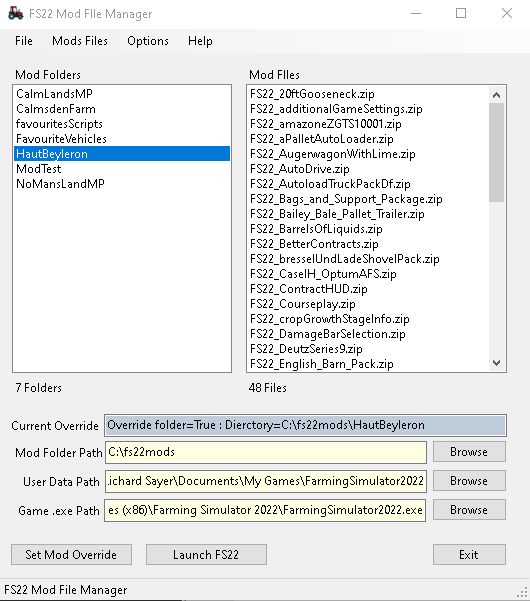
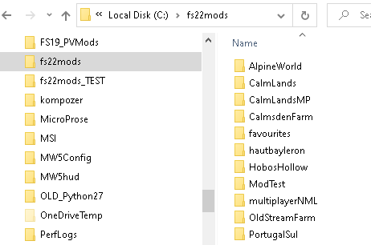
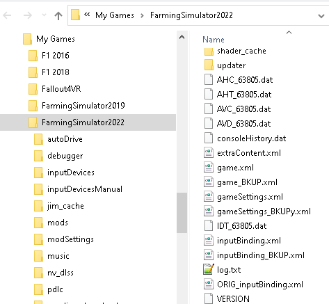
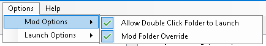

Contents
Farming Sumulator Mods Folder Manager
Manage your mods by using seperate directories for different maps
This helps to avoid having any conflicts from having multple maps in your mod folder or mods you don't need for the game you are playing.
It is especially useful if you play multiplayer games as you can install only the mods required for the server.
This application uses the subfolders in the "Mod Folders Path" to store the mods you wish to use for the map you are playing.
It updates the attributes in the modsDirectoryOverride tag in the gameSettings.xml file, located in the "Game Folder Path", to use the selected folder when the game is launched.

Top
Current Override
This is the current data from the gameSettings.xml file it will change when the Set Mod Override button is clicked.
The List Boxes
The "Mod Folders" List Box
The list on the left shows the sub-folders in the "Mod Folders Path" which contain your mods
- Select a folder and its contents are shown in the list on the right
- Right clicking a folder will show a context menu with actions that can be carried out on the selected folder
-
Double clicking a folder will cause the gameSettings.xml file to be updated and the game launched
(same as clicking the Set Mod Path Button then theLaunch Game Button)
This option can be switched on/off under the Mod Options menu
Top
The "Mod Files" List Box
This list on the right shows the sub folders in the "Mod Folders Path" which contain your mods
- Right clicking a mod file will show a context menu with actions that can be carried out on the selected item
- Double clicking a mod file will cause it to open in the default file type application, usually Windows file manager
Top
Folder Paths
Mod Folder Path
The location of the folder containing the sub-folders which hold the mods for a particular map or server (or however you wish to separate your mod files).
These sub-folders are the items that appear in the "Mod Folders" list.
Use the Browse button to set this value

Game Folder Path
This is the location where Farming Simulator installed the game config files.
This is usually in your user directory, for example, "C:\Users\your_user_name\Documents\My Games\FarmingSimyulator2022".
Use the Browse button to set this value

Game .exe Path
This is the location where Farming Simulator installed the game files.
The default is in the "C:\Program Files (x86)" folder, but may, for example if you use Steam, be located elsewhere.
Use the Browse button to set this value
Top
The File Menu
Open Game Data Directory
This will open the Farming Simulator user data installation folder in Windows File Manager
Open gameSettings.xml
This will open the Farming Simulator installation gameSetting.xml file in your dfault XML app
Open game.xml
This will open the Farming Simulator installation game.xml file in your dfault XML app
Refresh Data
This will refresh the data in the lists and the "Current Override" box
Exit
Closes the Mods Manager application.
Top
The Mods Menu
The "Mods" menu allows you to carry actions your mod files and their folders.
Open Mods Folder
Opens the currently selected mod folder in the default file manager e.g. 'Windows File Manager'
Launch Mod Hub
Launches the default browser to open the "Mod Hub" website
Mods Folders Menu
Add New Folder
Adds an new folder to the mod folders path, updates the list and selects the new folder.
Remove Selected Folder
Removes the highlighted folder in the "Mod Folders" list from the mod folders path.
NOTE: This action deletes the folder and all of its contents from your PC
This can also be done by right clicking a folder in the list.
Rename Selected Folder
Renames the highlighted folder in the "Mod Folders" to the name given.
Copy Selected as New Folder
Adds an new folder to the mod folders path and copies the files from the currently selected folder into it.
Updates the list and selects the new folder.
Mod Files Menu
Remove Selected Mod
Removes the highlighted mod file from the folder and removes it from the "Mods List".
NOTE: This action deletes the file from your PC
This can also be done by right clicking a mod file in the list.
Copy Mod File(s) to Selected Folder
This will launch the "Open Files" dialog so you can select the file(s) you wish to copy to the currently selected folder
You can select multiple files to copy.
Copy Mod File(s) to All Folders
This will launch the "Open Files" dialog so you can select the file(s) you wish to copy to all of your mod folders
For example, a new mod comes out you want to use in all your games. This will do it for you in a single action.
You can select multiple files to copy.
Top
The Options Menu
This menu allows you to set some options for the application.
These are checkable menu items, that is, a tick appears next to the menu item when checked.

Mod Options
Double CLick Folder to Launch
Checkable menu item.
If checked then double clicking a mod folder to launch the game is allowed
Mod Folder Override Active
Checkable menu item
Sets the value for the gameSettings.xml file to True if checked.
If you want to override the games default mod folder the option must be checked.
Launch Options
These option allow you to start the game with the console enabled. PLEASE MAKE SURE YOU KNOW WHAT THIS MEANS before checking them.
Google is your friend here if you don't know.
Launch With In Game Console
Updates the game.xml file element "Controls" to true if checked. This will allow the "back tick" key to open the console in game.
Launch With Cheats
This adds the -cheats switch to the launch command which allows the debug/cheat commands to be used in the console (requires "Launch With In Game Console" to be checked
Launch as Restart
This will add the "-restart" switch when launching the game. This will bypass the intro video and go straight to the menu screen.
Open User Setting Directory
This will open the directory containing the local user settings file.
IT IS NOT A GOOD IDEA TO MANUALLY CHANGE THESE
so please don't. If you do make sure you copy the original file before making any changes so you can roll it back.
Top
The Help Menu
Help
Opens this help file in a browser
About
Displays the application about box
Top
Buttons
Set Mod Override
Use this button if you want to update the gameSettings.xml file without launching the game.
This will update the gameSettings.xml file in the "Game Folder Path" with the values of "Mod Folder Override Active" under the "Options" menu (True idf checked) and the "Mod Folders Path".
If the "Ask Before Updating XML" value under the "Options" menu is not checked it WILL NOT ASK before updating the file.
Launch FS22
Use this button if you want to launch the game without update the gameSettings.xml file.
This button launches the game from the path set in this applications config.ini file. The default value is GAME_EXE=C:\Program Files (x86)\Farming Simulator 2022\FarmingSimulator2022.exe
but if, for example, you isntalled it from Steam you will need to update this path C:\Program Files (x86)\Steam\steamapps\common\Farming Simulator 2022\FarmingSimulator2022.exe
before you start the application. You can do this with any text editor such as notepad.
If you want to update the gameSettings.xml file and launch the game both at once make sure the "Double Click Folder to Launch" option under the "Options" menu is checked and simply double click the folder you want
to use in the game. If you do not want the "Are you sure..." message box to appear uncheck the "Ask Befor Updating XML" option under the "Options" menu
Top